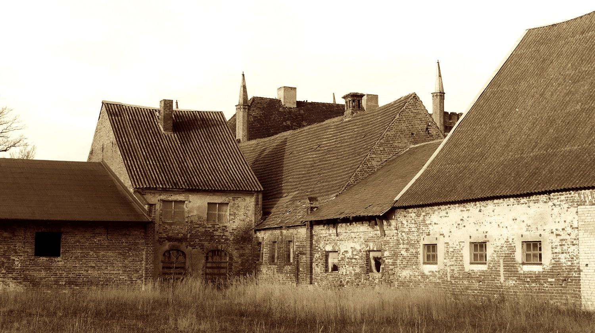

Kultur
Kulturgut Freiland
Kulturgut Freiland Auch zur 8. Runde des Freiland Sommerfestes in der Kieskuhle Broock, dem Kulturgut Freiland, waren wieder die Einwohner u…
Seite lesen →Poetenfrühstück
Das wandernde Poetenfrühstück aus dem Tollensetal und der Umgegend trifft sich seit 7 Jahren monatlich zum absichtslosen Schreiben auf alten…
Seite lesen →Schlossanlage Broock
Der Charme der Ökonomie Das Anlegen von Schlössern und Parks hatte schon immer seinen Preis. Die folgenden Betriebsausgaben waren auch nicht…
Seite lesen →Burg Klempenow
Es ist eine Kunst, das Auto zu bremsen! „Der Weg aus den Leitplanken, zurück zur Kultur“ - unter dieser Losung stand der erste Schritt an di…
Seite lesen →LEADER
„ BLU-BI “ Das mobile Blumen- und Bienenklassenzimmer für Kinder und Erwachsene „ Die BIENEN und WILDPFLANZEN kommen“ In dem Projekt entsteh…
Seite lesen →Im Kulturrat Zukunft schaffen
Die Künstlerin Tine Löber aus Neu Tellin ist Beisitzerin im Vorstand des neu gegründeten Kunst- und Kulturrat VorpommernGreifswald e. V.. Im Vorfeld der ersten Kulturkonferenz des Landkreises Vorpommern-Greifswald am 29. November 2013 hieß es: „Für die Zukunftsfähigkeit unserer Region brauchen wir solidarischen und offenen Austausch zwischen allen gesellschaftlichen Bereichen. Die Möglichkeiten von Kunst und Kultur sind enorm, einen solchen Austausch zu stimulieren. Die Zukunftsfähigkeit der Region ist eng verknüpft mit der Zukunftsfähigkeit von Kunst und Kultur in Vorpommern-Greifswald... Die Bildung von Netzwerken zwischen Kultur, Tourismus und Wirtschaft wird ein bedeutender Schritt für die Stärkung unserer Region sein – insbesondere wenn es gelingt, die Möglichkeiten selbstbestimmten Lebens und kultureller Teilhabe zu erhöhen.“ Freiheitsräume müssen verteidigt werden, sowohl gegen Vereinnahmung von Kunst und Kultur z.B. durch Tourismusmarketing, als auch gegen undemokratische Einflüsse.